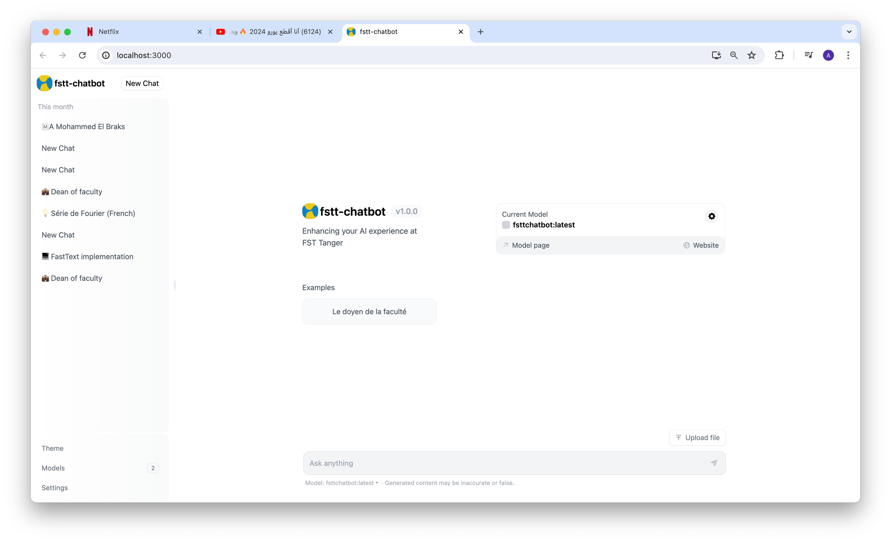
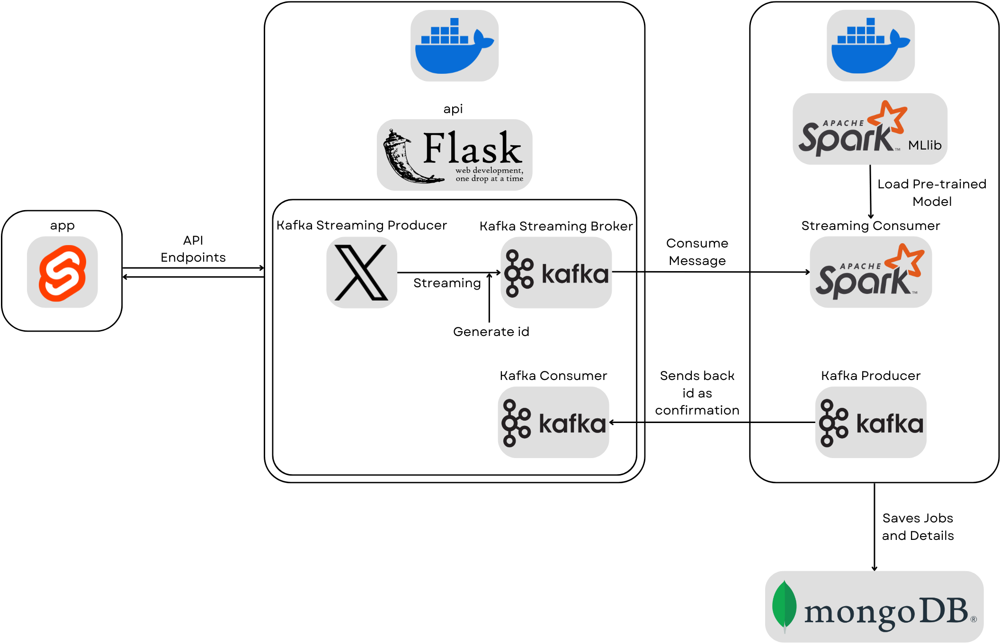
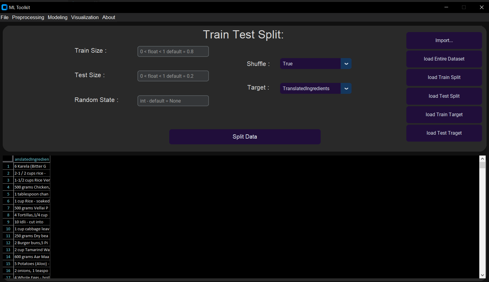
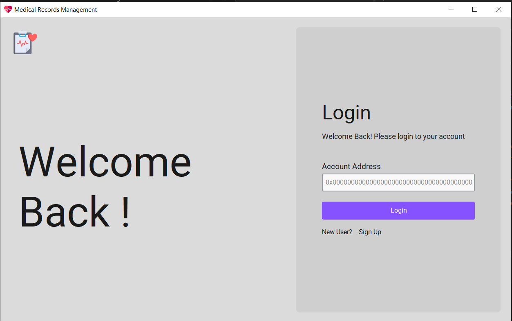
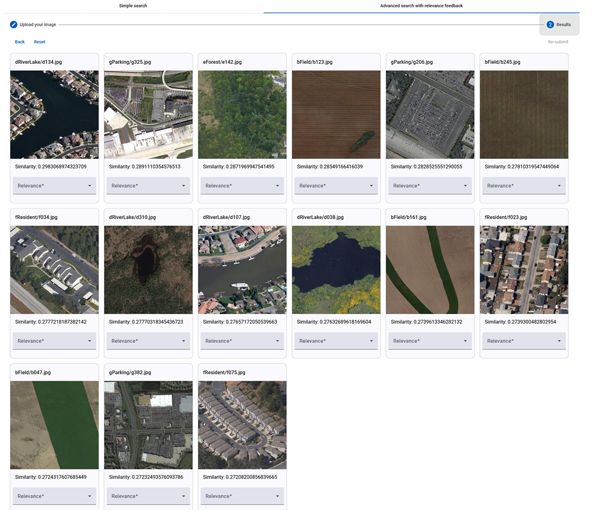

Hello and welcome to my portfolio! Here, you will find a curated selection of my latest projects, which highlight my skills, creativity, and dedication to [your field or industry, e.g., software development, design, data analysis, etc.]. Each project represents a unique challenge I embraced and successfully overcame, pushing the boundaries of innovation and quality.
This project aimed to develop a French language chatbot by combining fine-tuning techniques and advanced information retrieval methods. We began by scraping relevant data from the FSTT (Faculte des Sciences et Techniques de Tanger) website to create a custom dataset. Using LLaMA3, a powerful language model, we fine-tuned it with LORA (Low-Rank Adaptation) to tailor its responses specifically to the French context of the FSTT content. Additionally, we integrated Retrieval-Augmented Generation (RAG) to enable the chatbot to fetch and utilize information from a database of documents, ensuring it could provide precise and contextually accurate answers. This blend of fine-tuning for context and RAG for document-based retrieval resulted in a highly specialized and efficient French language chatbot
Burnout significantly affects shift workers due to the high demands and irregular schedules of their professions. It manifests as emotional exhaustion, depersonalization, and diminished personal accomplishment, impacting mental health and workplace productivity. This study explores the potential of wearable technology, specifically the Empatica E4 device, combined with machine learning, to predict burnout risk through physiological data (e.g., electrodermal activity, heart rate, skin temperature) and synthetic metrics (e.g., mood, work stress, quality of life). A convolutional neural network (CNN) was developed, achieving moderate performance metrics (RMSE: 0.065, R²: 0.23). Despite limitations like synthetic data and a small sample size, the research demonstrates the feasibility of using wearable sensors and machine learning for early burnout detection. It emphasizes the need for richer datasets and real-world validation while highlighting the potential to enable personalized stress management, improve mental health, and boost workplace productivity.
This project involves developing an app for real-time sentiment analysis on tweets, using a distributed system to handle the data. The frontend is built with Svelte for a dynamic user interface, while Flask powers the backend to manage API requests and user interactions. The distributed system employs Apache Kafka to ingest and stream tweets, and Apache Spark to process this streaming data and perform sentiment analysis. This combination ensures efficient, real-time analysis and presentation of tweet sentiments.
This project is toolkit designed for data preprocessing, machine learning modeling, visualization, and prediction using different models. It streamlines the entire data analysis pipeline by offering robust tools for cleaning and transforming raw data, building and evaluating multiple machine learning models, and generating insightful visualizations. The toolkit aims to enhance productivity and efficiency for data scientists, enabling them to seamlessly transition from raw data to actionable insights and accurate predictions within a single, integrated environment.
The "Medical Record with Blockchain" project aims to create a decentralized
application (DApp) for managing and securing patients' medical records using
blockchain technology. The smart contracts are developed in Solidity and
deployed on the Ethereum blockchain.
We designed and implemented an advanced content-based image retrieval (CBIR) system that enables efficient searching for similar images using visual descriptors such as color, shape, and texture. To enhance the user experience, we integrated a novel Bayesian Inference-based relevance feedback method, allowing the system to dynamically refine search results based on user preferences. This approach improves retrieval accuracy by iteratively learning from user interactions and adjusting the search parameters accordingly. The system combines robust visual analysis with adaptive feedback mechanisms, making it a powerful tool for applications requiring precise and user-centered image retrieval.